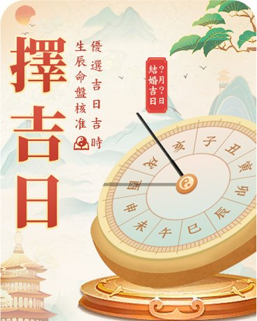
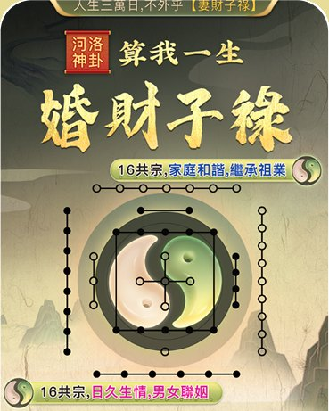
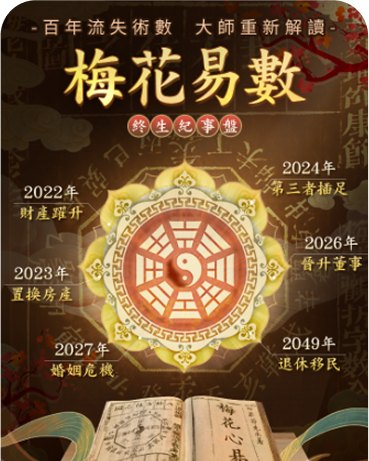
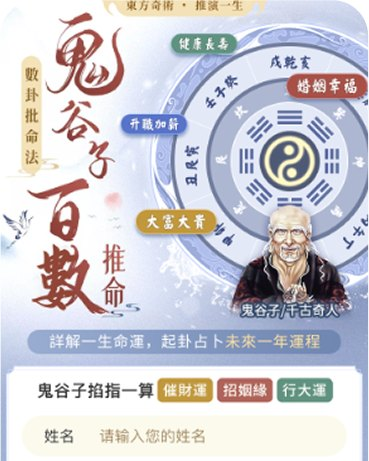
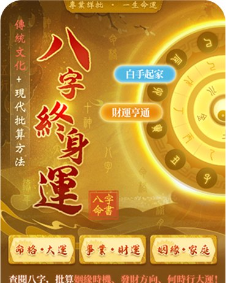
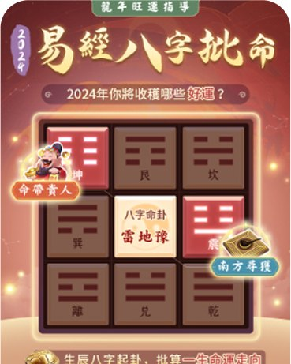
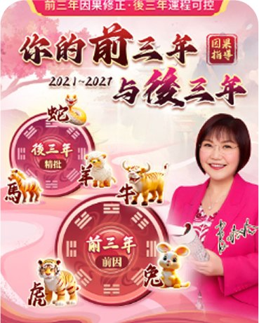
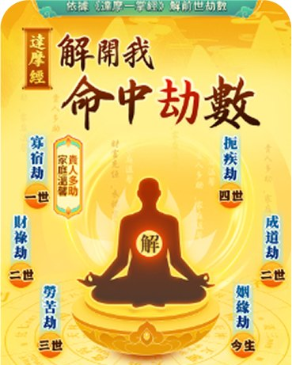
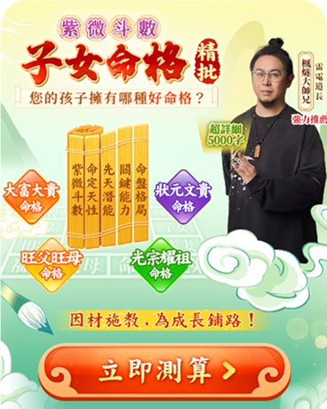

Design & AI Creation海外中文 · 视觉专题设计
面向海外华人用户的命理测算专题 H5。从择吉日、河洛神卦到梅花易数、八字终身运，为每个题材的专题分别建立主视觉，同时沉淀一套可复用的标题、背景、按钮与卡片组件，让繁体中文专题既有各自的辨识度，又保持统一的体验与转化路径。
- 题材
- 卦象 · 命理 · 民俗
- 场景
- 移动端 H5 · 海外繁体
- 范围
- 主视觉 · 组件 · 页面
- 方式
- 设计 + AI 辅助创作
BACKGROUND
一个题材一张脸，一套组件管全局
海外中文命理专题题材多、上新快，旧版页面各自为战。改版的目标不是把所有专题做成一个样子，而是在保留题材辨识度的前提下，统一组件与转化路径。
- 视觉杂乱全页面视觉统一
每个专题建立明确的主色与主视觉，标题、背景、按钮遵循同一套层级。
- 组件无标准标准化组件体系
主标题、背景氛围、按钮、入口卡片、文化介绍卡片沉淀为可复用组件。
- 复用率低迭代效率提升
新专题替换主视觉与文案即可上线，入口卡片可批量复用、快速迭代。
- 风格割裂专业调性与文化底蕴
书法、罗盘、卦象、古籍、水墨等传统元素贯穿全页，强化专业感，驱动商业转化。
TOPICS
专题列表
按题材筛选，点击任一专题，进入详情查看完整页面、设计要点、页面模块与主色。
-

含组件解析 择吉日 優選吉日吉時，生辰命盤核准 查看详情 -

含组件解析 河洛神卦 · 婚财子禄 算我一生 · 16 共宗，家庭和諧，繼承祖業 查看详情 -

梅花易数 · 终生纪事盘 百年流失術數 · 大師重新解讀 查看详情 -

鬼谷子百数推命 詳解一生命運，起卦占卜未來一年運程 查看详情 -

八字终身运 傳統文化 + 現代批算方法 查看详情 -

易经八字批命 2024 年你將收穫哪些好運？ 查看详情 -

你的前三年与后三年 前三年因果修正 · 後三年運程可控 查看详情 -

解开我命中劫数 依據《達摩一掌經》解前世劫數 查看详情 -

紫微斗数 · 子女命格 您的孩子擁有哪種好命格？ 查看详情
全部页面
按住可左右拖动预览